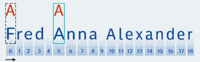
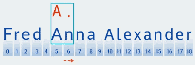
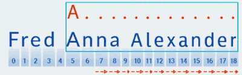
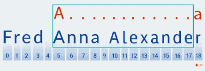
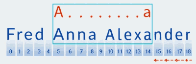
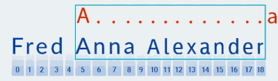
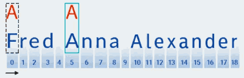
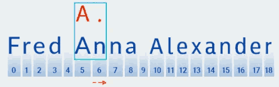
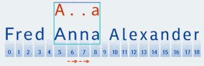
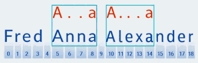

Una expresión regular es un patrón para encontrar una cadena en el texto. En Java, la representación original de este patrón es siempre una cadena, es decir, un objeto de la String. Debe cumplir una serie de reglas para ser una expresión regular válida. Se escriben con letras y números, así como con metacaracteres, que son caracteres que tienen un significado especial en la sintaxis de las expresiones regulares. Por ejemplo:
String regex = "java"; // el modelo es "java";
String regex = "\\d{3}"; // el modelo es tres dígitos;
La creación de una expresión regular en Java implica dos pasos simples:
- escríbalo como una cadena que cumpla con la sintaxis de expresiones regulares;
- compilar la cadena en una expresión regular;
Primero se crea un objeto patrón (Pattern) mediante el método .compile(cadena).
La sintaxis de las expresiones regulares se basa en los caracteres <([{\^-=$!|]})?*+.>, que se pueden combinar con letras. Dependiendo de su función, se pueden dividir en varios grupos:
1. Metacaracteres para hacer coincidir los límites de líneas o texto
Metacarácter Descripción
^ principio de una linea
ps final de una línea
\b límite de palabras
\B límite de no palabra
\A comienzo de la entrada
\GRAMO final del partido anterior
\Z final de la entrada
\z final de la entrada
2. Metacaracteres para emparejar clases de caracteres predefinidas
Metacarácter Descripción
\d dígito
\D sin dígitos
\s carácter de espacio en blanco
\S carácter sin espacio en blanco
\w carácter alfanumérico o guión bajo
\W cualquier carácter excepto letras, números y guiones bajos
. cualquier carácter
3. Metacaracteres para emparejar caracteres de control
Metacarácter Descripción
\t carácter de tabulación
\n carácter de nueva línea
\r retorno de carro
\F carácter de avance de línea
\u0085 carácter de la siguiente línea
\u2028 separador de linea
\u2029 separador de párrafo
4. Metacaracteres para clases de personajes
Metacarácter Descripción
[a B C] cualquiera de los caracteres enumerados (a, b o c)
[^ abc] cualquier carácter distinto de los enumerados (no a, b, o c)
[a-zA-Z] rangos combinados (caracteres latinos de la a a la z, sin distinción entre mayúsculas y minúsculas)
[anuncio[mp]] unión de caracteres (de la a a la d y de la m a la p)
[az&&[def]] intersección de caracteres (d, e, f)
[az&&[^bc]] resta de caracteres (a, dz)
5. Metacaracteres para indicar el número de caracteres (cuantificadores). Un cuantificador siempre va precedido de un carácter o grupo de caracteres.
Metacarácter Descripción
? uno o ninguno
* cero o más veces
+ una o más veces
{n} n veces
{n,} n o más veces
{N M} al menos n veces y no más de m veces
Cuantificadores codiciosos
Buscan la coincidencia más larga de la cadena. Por defecto los cuantificadores son codiciosos.
public static void main(String[] args) {
String text = "Fred Anna Alexander";
Pattern pattern = Pattern.compile("A.+a");
Matcher matcher = pattern.matcher(text);
while (matcher.find()) {
System.out.println(text.substring(matcher.start(), matcher.end()));
}
}
Obtenemos la salida: Anna Alexa
Para la expresión regular " A.+a", la coincidencia de patrones se realiza de la siguiente manera:
- El primer carácter del patrón especificado es la letra latina A. Matcher lo compara con cada carácter del texto, comenzando desde el índice cero. El carácter F está en el índice cero en nuestro texto, por lo que Matcher itera a través de los caracteres hasta que coincida con el patrón. En nuestro ejemplo, este carácter se encuentra en el índice 5.
 - Una vez que se encuentra una coincidencia con el primer carácter del patrón, Matcher busca una coincidencia con su segundo carácter. En nuestro caso, es el caracter "." , que representa cualquier carácter.

El caracter n está en la sexta posición. Ciertamente califica como una coincidencia para "cualquier caracter". - Matcher procede a comprobar el siguiente carácter del patrón. En nuestro patrón, se incluye en el cuantificador que se aplica al carácter anterior: " .+". Debido a que el número de repeticiones de "cualquier carácter" en nuestro patrón es una o más veces, Matcher toma repetidamente el siguiente carácter de la cadena y lo compara con el patrón siempre que coincida con "cualquier carácter". En nuestro ejemplo, hasta el final de la cadena (del índice 7 al índice 18).

Básicamente, Matcher engulle la cadena hasta el final; esto es precisamente lo que significa "codicioso". - Después de que Matcher llega al final del texto y finaliza la verificación de la parte "A.+" del patrón, comienza a verificar el resto del patrón: "a". No hay más texto avanzando, por lo que la verificación continúa "retrocediendo", comenzando desde el último carácter:
 - Matcher "recuerda" el número de repeticiones en la parte ".+" del patrón. En este punto, reduce el número de repeticiones en una y compara el patrón más grande con el texto hasta que encuentra una coincidencia:

Cuantificadores posesivos
Un cuantificador se convierte en posesivo agregando un carácter "+" después del cuantificador.
"A.+a" // codicioso
"A.++a" // posesivo
Se parecen mucho a los codiciosos. La diferencia es que cuando el texto se ha capturado hasta el final de la cadena, no hay coincidencia de patrones mientras se "retrocede". En otras palabras, las primeras tres etapas son las mismas que para los cuantificadores codiciosos. Después de capturar toda la cadena, el comparador agrega el resto del patrón a lo que está considerando y lo compara con la cadena capturada. En nuestro ejemplo, usando la expresión regular "A.++a", el método principal no encuentra ninguna coincidencia.

Cuantificadores reacios
Un cuantificador se convierte en reacio agregando un carácter "?" después del cuantificador.
"A.+a" // codicioso
"A.+?a" // reacio
1. Para estos cuantificadores, al igual que con la variedad codiciosa, el código busca una coincidencia basada en el primer carácter del patrón:

2. Luego busca una coincidencia con el siguiente carácter del patrón (cualquier carácter):

3. A diferencia de la coincidencia de patrones codiciosos, la coincidencia más corta se busca en la coincidencia de patrones reacia. Esto significa que después de encontrar una coincidencia con el segundo carácter del patrón (un punto, que corresponde al carácter en la posición 6 del texto), Matcher comprueba si el texto coincide con el resto del patrón: el carácter " a"

4. El texto no coincide con el patrón (es decir, contiene el carácter " n" en el índice 7), por lo que Matcher agrega más un "cualquier carácter", porque el cuantificador indica uno o más. Luego vuelve a comparar el patrón con el texto en las posiciones 5 a 8:

En nuestro caso, se encuentra una coincidencia, pero aún no hemos llegado al final del texto. Por lo tanto, la coincidencia de patrones se reinicia desde la posición 9, es decir, se busca el primer carácter del patrón usando un algoritmo similar y esto se repite hasta el final del texto.

En consecuencia, el método main obtiene el siguiente resultado cuando usa el patrón " A.+?a": Anna Alexa Como puede ver en nuestro ejemplo, diferentes tipos de cuantificadores producen resultados diferentes para el mismo patrón. Así que ten esto en cuenta y elige la variedad adecuada según lo que estés buscando.
import java.util.regex.Matcher;
import java.util.regex.Pattern;
public class ExpresionRegularJava {
public static void main(String[] args) {
// Definir el patrón de la expresión regular
String patron = "\\b\\d{3}\\b";
// Crear el objeto Pattern
Pattern pattern = Pattern.compile(patron);
// Definir la cadena de texto en la que buscar
String texto = "123 456 789";
// Crear el objeto Matcher
Matcher matcher = pattern.matcher(texto);
// Realizar la búsqueda y encontrar coincidencias
while (matcher.find()) {
String coincidencia = matcher.group();
System.out.println("Coincidencia encontrada: " + coincidencia);
}
}
}
En este ejemplo, la expresión regular "\b\d{3}\b" busca secuencias de tres dígitos completas en una cadena de texto. El metacaracter "\b" representa un límite de palabra, lo que asegura que solo se consideren secuencias de tres dígitos completas y no partes de secuencias más largas. El metacaracter "\d" representa cualquier dígito del 0 al 9, y "{3}" indica que debe haber exactamente tres dígitos en la secuencia.
La cadena de texto en este caso es "123 456 789". Al ejecutar el código, se encontrarán tres coincidencias de tres dígitos: "123", "456" y "789". Cada coincidencia se imprimirá en la salida.
https://regex101.com/ --> validar expresiones regulares